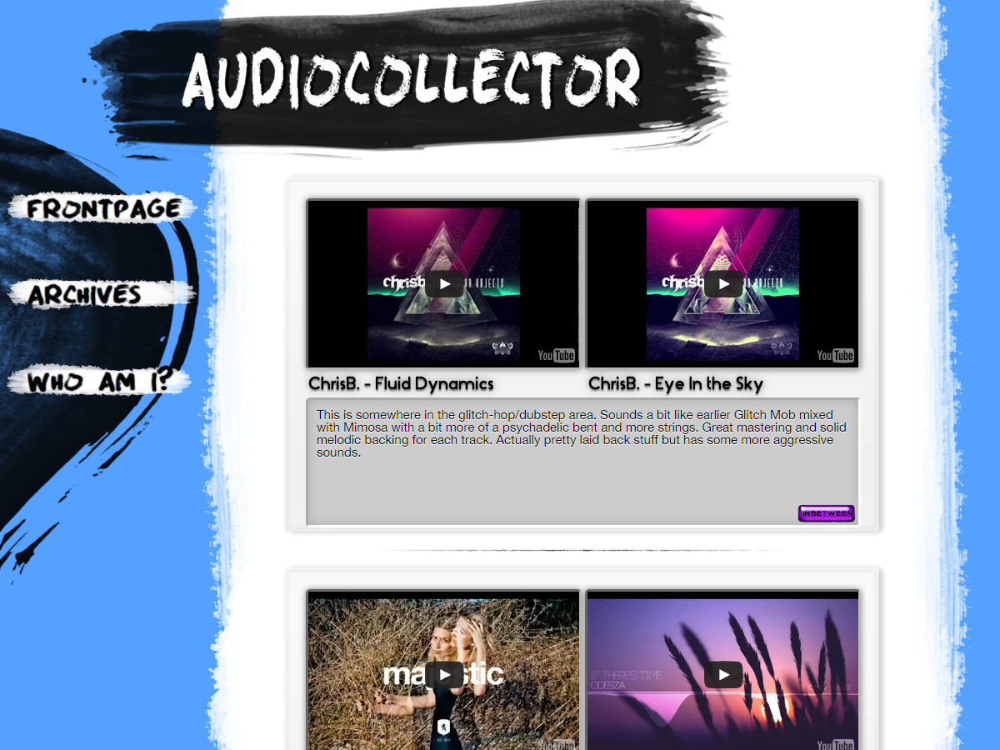

Audiocollector Music Blog: I wanted to do some work on pre-designing and slicing PSD's into a page, and decided to try a simple but very functional music sharing site. The layout and code is all modular and allows new posts with a simple url paste, allowing for Youtube or Bandcamp links. The buttons and aesthetics are all hand done, giving me a chance to work on my brush making and layer styles techniques. I also implemented an extremely simple archive system to allow old posts to be easily found or scanned regardless of age with a simple "ctrl-F" search, something I found lacking in many similar sites. VISIT IT →
